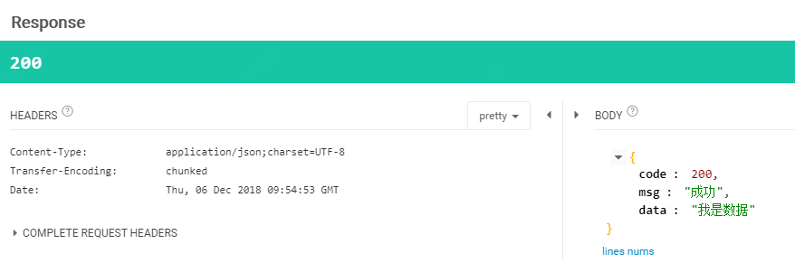
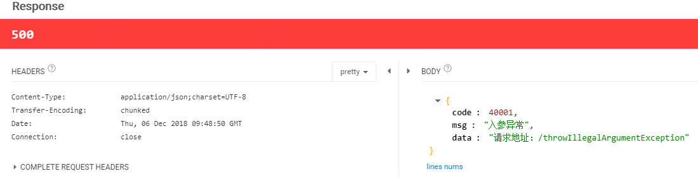
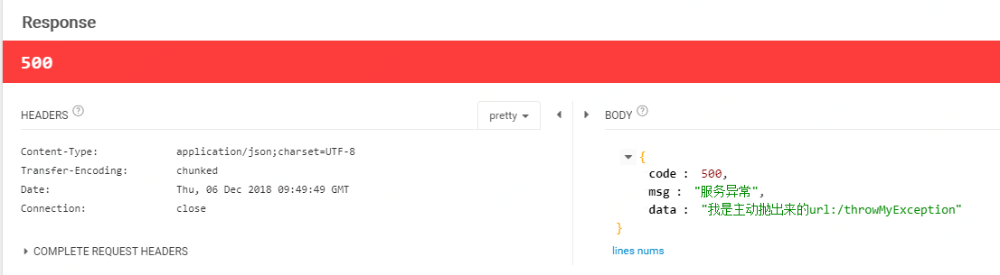
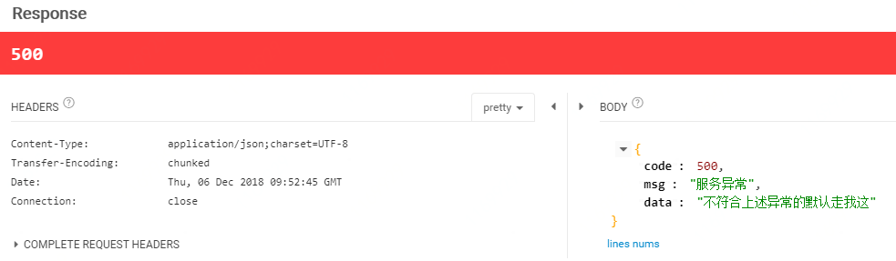

本文讲解如何在springboot项目中使用自定义异常，统一返回，全局异常处理
新建一个springboot项目，引入web依赖，pom.xml完整依赖如下
<dependencies>
<dependency>
<groupId>org.springframework.boot</groupId>
<artifactId>spring-boot-starter-web</artifactId>
</dependency>
<dependency>
<groupId>org.springframework.boot</groupId>
<artifactId>spring-boot-starter-test</artifactId>
<scope>test</scope>
</dependency>
<dependency>
<groupId>org.projectlombok</groupId>
<artifactId>lombok</artifactId>
<version>1.16.22</version>
</dependency>
</dependencies>自定义异常
在项目中有的地方，比如入参校验错误，安全校验失败等可能需要主动去抛异常，这时候就需要自己自定义一个异常。
/**
* @auther: chenmingyu
* @date: 2018/12/6 14:36
* @description:
*/
@Data
public class MyException extends RuntimeException{
private Integer code;
private String msg;
public MyException(Integer code, String msg) {
this.code = code;
this.msg = msg;
}
public MyException(String msg) {
this.code = ResultTypeEnum.SERVICE_ERROR.getCode();
this.msg = msg;
}
public MyException(ResultTypeEnum resultEnum) {
this.code = resultEnum.getCode();
this.msg = resultEnum.getMessage();
}
}自定义异常只要新建一个类继承RuntimeException类
统一返回值
定义统一返回类：Result
Result 类构造函数私有化，使用Result 类提供的static方法构造Result 实例返回，再定义一个响应状态的枚举ResultTypeEnum，同一返回状态码等信息。
/**
* @auther: chenmingyu
* @date: 2018/10/31 16:47
* @description:
*/
public class Result<T> implements Serializable {
private Integer code;
private String msg;
private T data;
private Result() {
}
public Result(ResultTypeEnum type) {
this.code = type.getCode();
this.msg = type.getMessage();
}
public Result(ResultTypeEnum type, T data) {
this.code = type.getCode();
this.msg = type.getMessage();
this.data = data;
}
public Result(ResultTypeEnum type, String content, T data) {
this.code = type.getCode();
this.msg = content;
this.data = data;
}
public static Result success() {
return new Result(ResultTypeEnum.SERVICE_SUCCESS);
}
public static <T> Result<T> success(T data) {
return new Result(ResultTypeEnum.SERVICE_SUCCESS, data);
}
public static <T> Result<T> error(T data) {
return new Result(ResultTypeEnum.SERVICE_ERROR, data);
}
public static <T> Result<T> success(String content, T data) {
return new Result(ResultTypeEnum.SERVICE_SUCCESS, content, data);
}
public static Result error() {
return new Result(ResultTypeEnum.SERVICE_ERROR);
}
public static Result error(ResultTypeEnum typeEnum) {
return new Result(typeEnum);
}
public static Result error(ResultTypeEnum typeEnum,String msg) {
return new Result(typeEnum,msg);
}
public String getMsg() {
return msg;
}
public void setMsg(String msg) {
this.msg = msg;
}
public Integer getCode() {
return code;
}
public void setCode(Integer code) {
this.code = code;
}
public T getData() {
return data;
}
public void setData(T data) {
this.data = data;
}
}响应状态枚举：ResultTypeEnum
/**
* @auther: chenmingyu
* @date: 2018/10/31 16:47
* @description:
*/
public enum ResultTypeEnum {
SERVICE_SUCCESS(200,"成功"),
PARAM_ERROR(40001,"入参异常"),
SERVICE_ERROR(500,"服务异常");
private Integer code;
private String message;
public int getCode() {
return code;
}
public void setCode(int code) {
this.code = code;
}
public String getMessage() {
return message;
}
public void setMessage(String message) {
this.message = message;
}
ResultTypeEnum(int code, String message) {
this.code = code;
this.message = message;
}
}怎么使用
/**
* @auther: chenmingyu
* @date: 2018/12/6 14:20
* @description:
*/
@RestController
public class ExceptionController {
/**
* 成功返回值
*/
@RequestMapping("/querySuccess")
public Result<String> querySuccess(){
return Result.success("我是数据");
}
/**
* 错误返回值
*/
@RequestMapping("/queryError")
public Result<String> queryError(){
return Result.error(ResultTypeEnum.SERVICE_ERROR);
}
}
调用 http://localhost:8080/querySuccess

调用 http://localhost:8080/queryError

全局异常处理
在spring的项目中使用@ControllerAdvice注解来处理controller层报出的异常信息
//ControllerAdvice 注解源码
@Target({ElementType.TYPE})
@Retention(RetentionPolicy.RUNTIME)
@Documented
@Component
public @interface ControllerAdvice {
@AliasFor("basePackages")
String[] value() default {};
@AliasFor("value")
String[] basePackages() default {};
Class<?>[] basePackageClasses() default {};
Class<?>[] assignableTypes() default {};
Class<? extends Annotation>[] annotations() default {};
}全局异常处理类
@ExceptionHandler(value = Exception.class)：处理Exception类型的异常
@ResponseStatus：响应的状态码
/**
* @auther: chenmingyu
* @date: 2018/12/6 10:57
* @description:
*/
@ControllerAdvice
public class ExceptionHandle extends ResponseEntityExceptionHandler {
/**
* 只捕获 IllegalArgumentException 异常
* @param request
* @param e
* @return
*/
@ExceptionHandler(value = IllegalArgumentException.class)
@ResponseBody
@ResponseStatus(HttpStatus.INTERNAL_SERVER_ERROR)
private Result illegalArgumentExceptionHandler(HttpServletRequest request, Exception e) {
System.out.println("IllegalArgumentException 异常: " + e.getClass().getName());
return Result.error(ResultTypeEnum.PARAM_ERROR,"请求地址："+request.getRequestURI());
}
/**
* 只捕获 MyException 异常
* @param request
* @param e
* @return
*/
@ExceptionHandler(value = MyException.class)
@ResponseBody
@ResponseStatus(HttpStatus.INTERNAL_SERVER_ERROR)
private Result myExceptionHandler(HttpServletRequest request,MyException e) {
System.out.println("自定义异常 ："+ e.getMsg());
return Result.error(e.getMsg()+"url:"+request.getRequestURI());
}
/**
* 默认异常捕获，上面两个异常没走的话走我。
* @param request
* @param e
* @return
*/
@ExceptionHandler
@ResponseBody
@ResponseStatus(HttpStatus.INTERNAL_SERVER_ERROR)
private Result exceptionHandler(HttpServletRequest request,Exception e) {
System.out.println("异常 ："+ e.getClass().getName());
request.getMethod();
return Result.error(ResultTypeEnum.SERVICE_ERROR,"不符合上述异常的默认走我这");
}
}处理异常测试
/**
* @auther: chenmingyu
* @date: 2018/12/6 14:20
* @description:
*/
@RestController
public class ExceptionController {
/**
* 抛出运行时异常
*/
@RequestMapping("/throwRuntimeException")
public void throwRuntimeException(){
throw new RuntimeException();
}
/**
* 抛出运行时异常
*/
@RequestMapping("/throwIllegalArgumentException")
public void throwIllegalArgumentException(){
throw new IllegalArgumentException();
}
/**
* 抛出自定义异常
*/
@RequestMapping("/throwMyException")
public void throwMyException(){
throw new MyException("我是主动抛出来的");
}
}调用http://localhost:8080/throwIllegalArgumentException

调用http://localhost:8080/throwMyException

调用http://localhost:8080/throwRuntimeException
